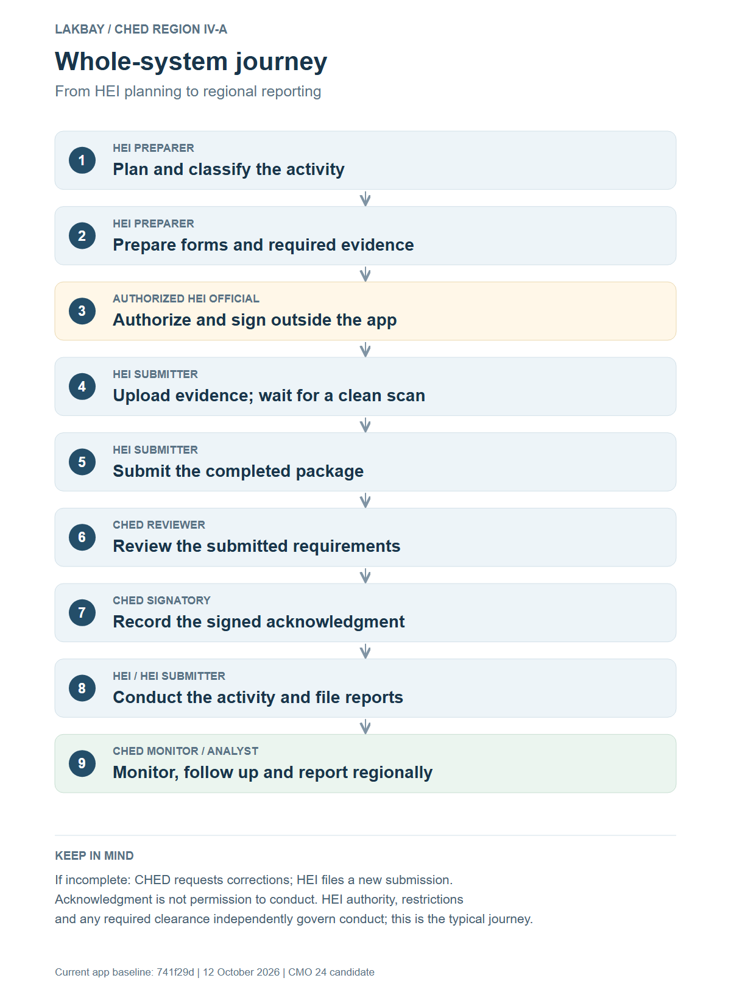
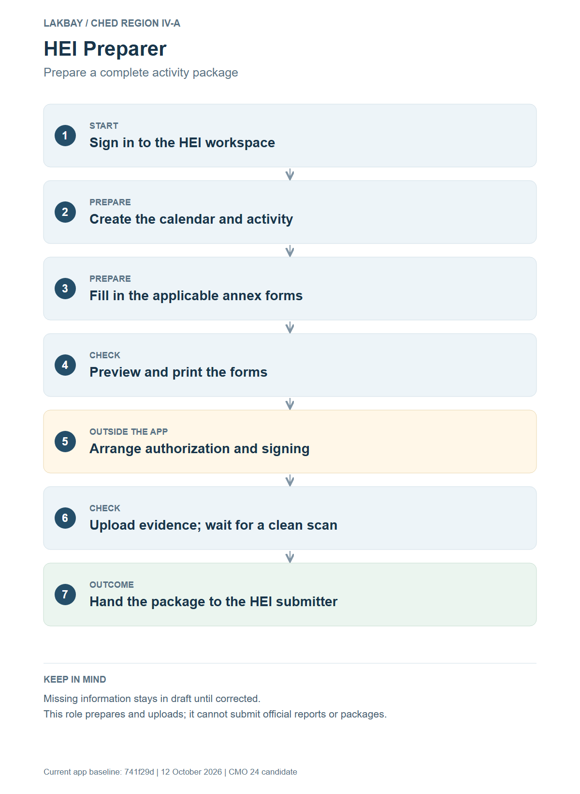
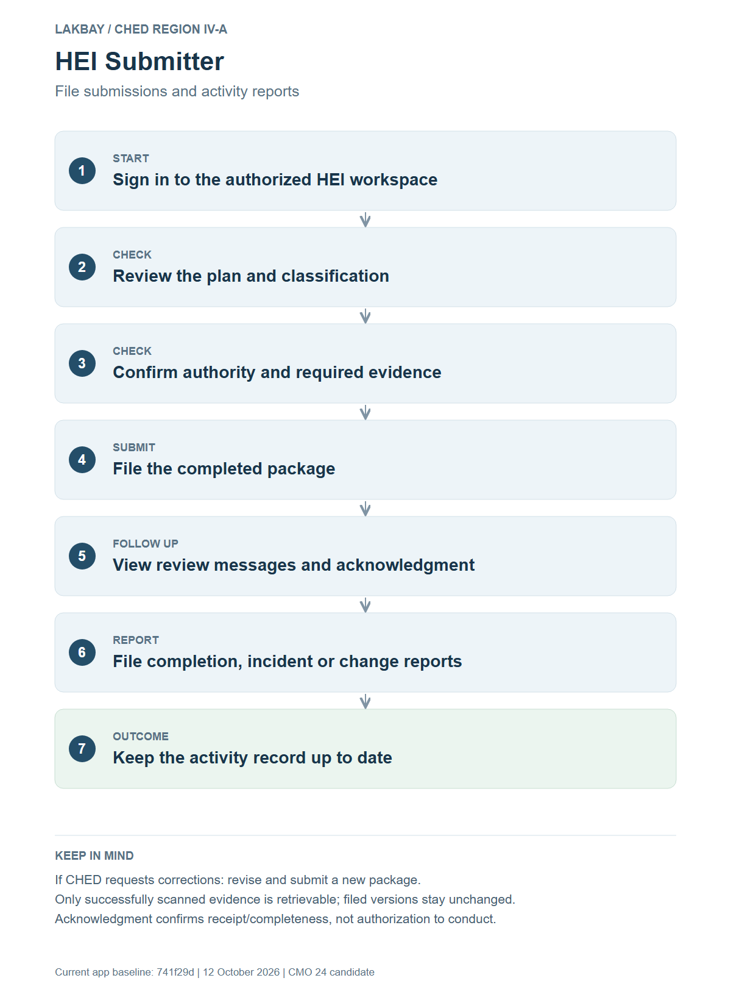
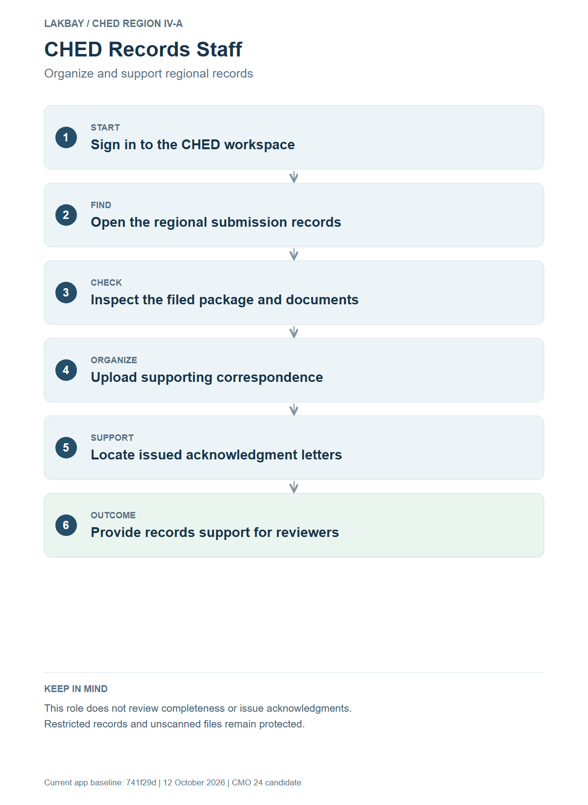
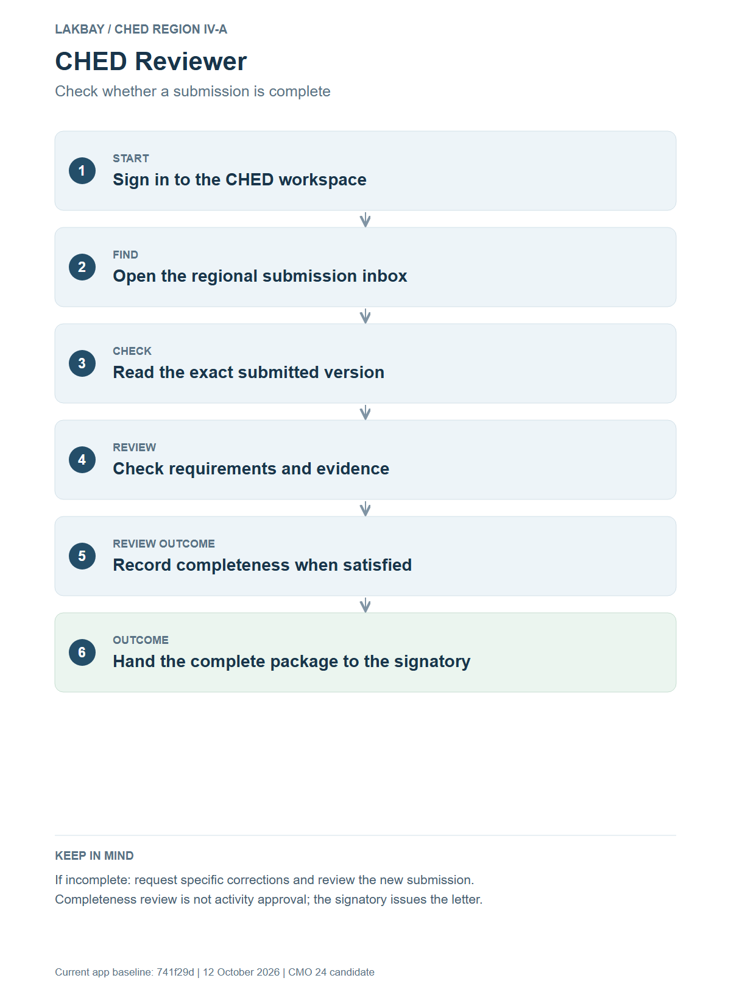
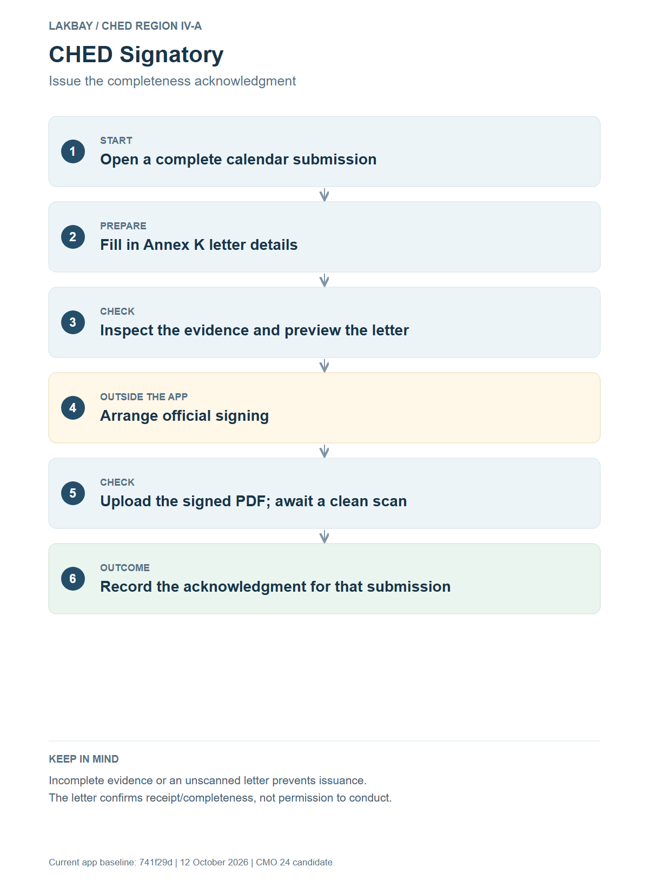
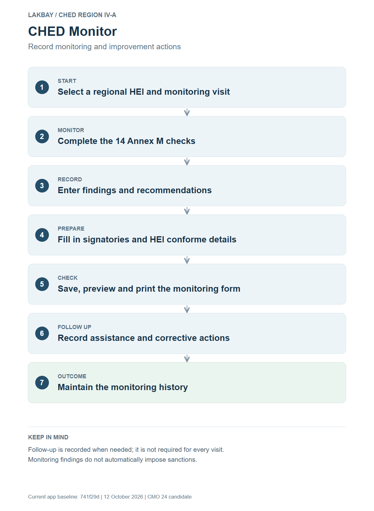
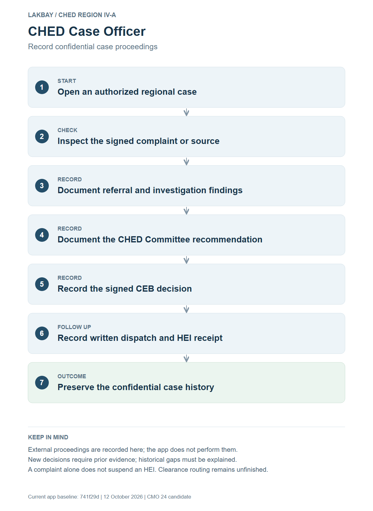
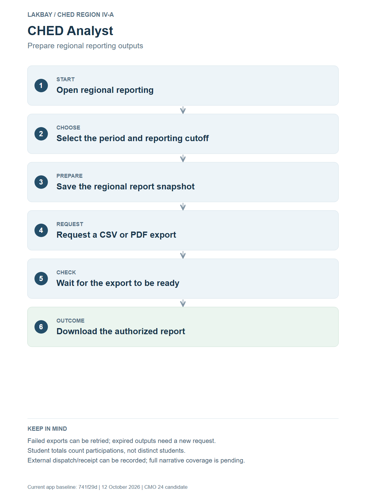
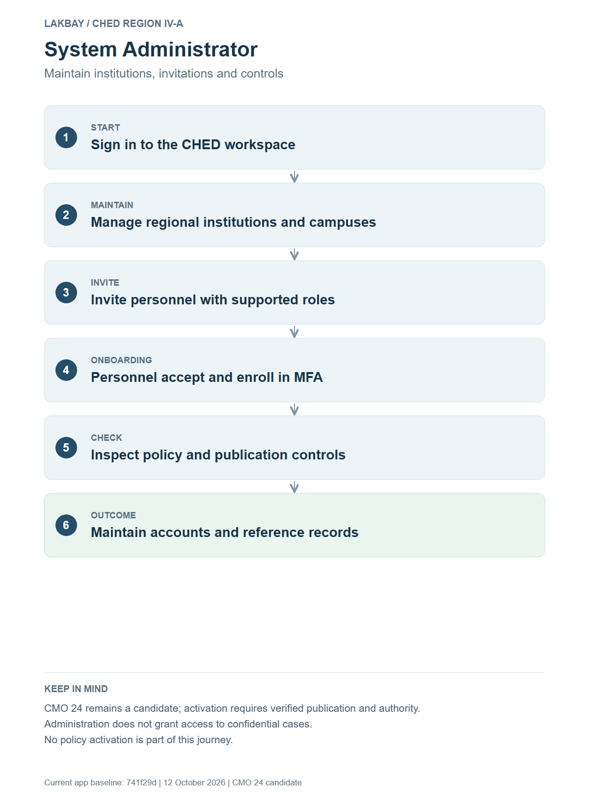

LAKBAY: simple workflow journeys
One direction. One responsibility per step. The notes explain exceptions.
Open the previous detailed flowcharts
Handoffs and speaker notes · Download all files
Whole-system journey
The HEI prepares and files its evidence. CHED checks completeness and records an acknowledgment. The HEI conducts under its own authorization and applicable restrictions or clearance, then reports outcomes. CHED monitors and compiles regional information.
PNG · SVG · Mermaid source
HEI Preparer
The preparer assembles activity information and forms, arranges external authorization and signing, and uploads evidence. Once the package is ready, the authorized submitter takes over.
PNG · SVG · Mermaid source
HEI Submitter
The authorized submitter checks the package and files it officially. They follow review messages, resubmit corrections when needed, and file the activity reports.
PNG · SVG · Mermaid source
CHED Records Staff
Records staff locate submissions, inspect permitted documents and organize correspondence. They support the review team without making completeness or signing decisions.
PNG · SVG · Mermaid source
CHED Reviewer
The reviewer checks the requirements against the exact filed package. Missing information results in a correction request. A complete package is ready for the signatory.
PNG · SVG · Mermaid source
CHED Signatory
The signatory prepares Annex K for a complete calendar package, arranges official signing, and records the clean signed letter against the exact submission.
PNG · SVG · Mermaid source
CHED Monitor
The monitor documents the visit using Annex M, records findings and recommendations, and prints the form. Assistance and corrective follow-up are recorded when necessary.
PNG · SVG · Mermaid source
CHED Case Officer
The case officer records evidence of external proceedings, recommendations, decisions and receipt. Access is confidential, and a complaint alone does not impose a sanction.
PNG · SVG · Mermaid source
CHED Analyst
The analyst selects the reporting period, freezes the regional figures and requests an export. Once ready, the authorized report can be downloaded and shared through the official external process.
PNG · SVG · Mermaid source
System Administrator
The administrator maintains institutions and invites personnel. Invited users complete their own account setup and MFA. Policy controls remain subject to publication verification and CHED authority.
PNG · SVG · Mermaid source